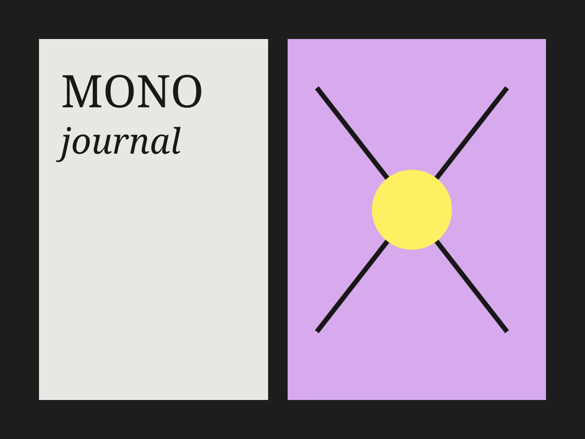
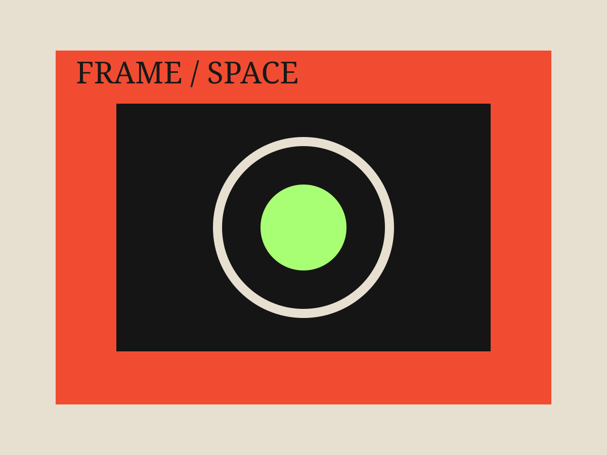
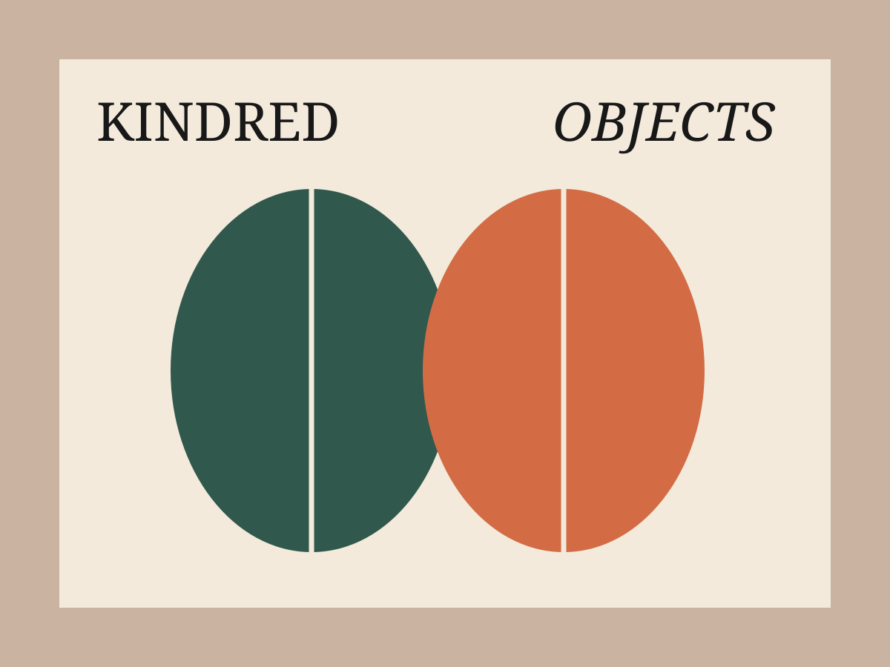

A product design study focused on clear structure, intuitive interaction, and a visual system that helps users understand what to do without unnecessary explanation.

Selected work · Design explorations
A selection of digital products, visual concepts, graphic systems, and creative experiments developed through research, curiosity, and an evolving set of tools.
A clear and thoughtful interface concept built around user needs, structure, and an intuitive visual hierarchy.

A flexible visual language that brings typography, color, composition, and brand character into one coherent system.

An experimental concept developed through rapid visual exploration, AI tools, and careful art direction.

A fast-moving prototype used to test an idea, explore interaction, and turn an early concept into something tangible.

A study of depth, movement, and atmosphere created through playful 3D composition and interactive thinking.

A typography-led layout system balancing expressive composition with rhythm, readability, and consistency.
A product design study focused on clear structure, intuitive interaction, and a visual system that helps users understand what to do without unnecessary explanation.
A visual identity concept built from typography, color, composition, and a flexible set of graphic elements designed to remain consistent across different formats.
A visual experiment using AI as a creative partner for rapid exploration. The process combines generated directions with deliberate selection, refinement, and art direction.
A quick prototype created to test how an idea feels in motion. Figma Make supports the early exploration of interaction, behavior, and different user flows before deeper production.
A spatial study exploring depth, light, movement, and atmosphere. Spline is used as a playful way to bring graphic thinking into an interactive three-dimensional environment.
A typography-led design system focused on rhythm, hierarchy, and readability. The layout creates a clear structure while leaving room for expressive visual moments.